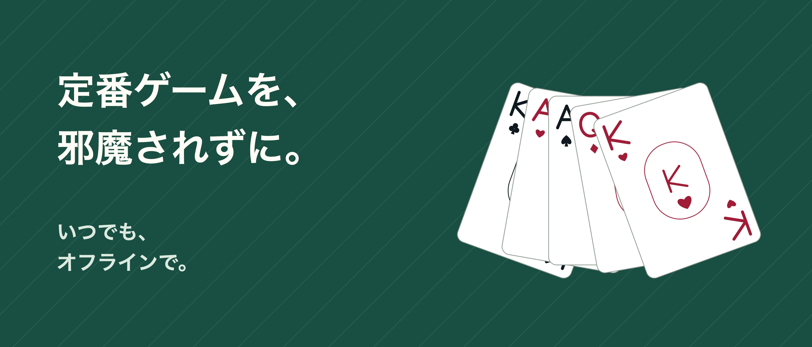

ソリティア Unbound

一枚ずつ、自分の時間を。
カードと過ごす、邪魔のないひととき。1枚めくり・3枚めくりのクロンダイクを、広告、IFGアカウント、定期購入なしで遊べます。
何度でもやり直せる 元に戻す、やり直す、合法な手のヒントは無料です。ドラッグでも、カードと移動先を順にタップしても操作できます。リラックスでは時間を非表示に、クラシックでは時間と手数を表示します。
途中から、また遊べる ゲームの保存データと統計は端末内に残ります。ランダムな配置や解法を検証した初期配置を選び、デイリーチャレンジにも挑戦できます。ランダムな配置は必ず解けるとは限りません。解法を検証した配置でも、手の選び方によっては行き詰まります。
Proで遊び方を広げる 一度だけの購入で、フリーセル、1・2・4スートのスパイダー、チャレンジ履歴、追加のカスタマイズが利用できます。テーブル6種類、カード裏面6種類、表面3種類を収録。ヒントを追加購入したり消費したりする必要はありません。
ゲームはオフラインで遊べます。Proの購入・復元にはインターネット接続とApple Accountが必要な場合があります。進行状況は端末間で同期されず、アプリの削除で失われることがあります。Proの復元では削除した進行状況は戻りません。